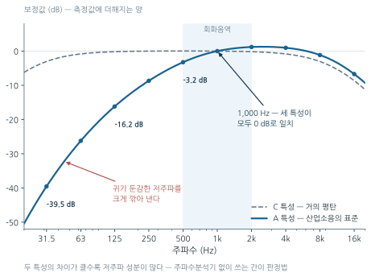
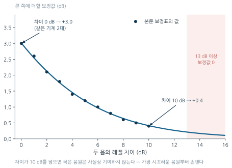
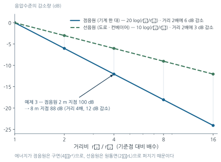
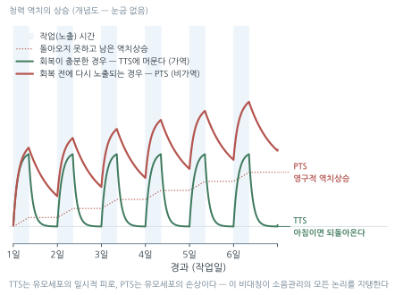
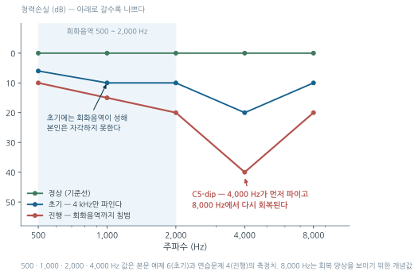
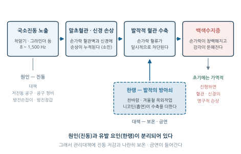

6주차. 물리적 유해인자 I — 소음과 진동
소리의 물리량(dB, 주파수, 청감보정), 소음의 합성·거리감쇠, 측정과 노출기준, 소음성 난청과 청력보존 프로그램, 전신·국소 진동과 레이노 현상
학습목표
이 주를 학습한 후 여러분은 다음을 할 수 있어야 합니다:
- 음압, 음압수준(SPL), 음향파워수준(PWL)의 관계를 이해하고 데시벨 연산(합성·거리감쇠)을 수행할 수 있다
- 청감보정회로(A특성·C특성)의 원리와 용도를 설명할 수 있다
- 등가소음도(\(L_{eq}\))와 누적노출량(Dose)을 계산하여 소음 노출기준 초과 여부를 판정할 수 있다
- 소음성 난청의 특징(감각신경성, C5-dip, 양측성)과 일시적·영구적 역치 이동을 구분할 수 있다
- 음원–전파경로–수음자의 틀로 소음 관리대책을 설계하고 청력보존 프로그램의 구성요소를 설명할 수 있다
- 전신진동과 국소진동의 건강영향(요통, 레이노 현상)을 구분하고 공진의 개념에 기초한 진동 관리대책을 설명할 수 있다
1. 음압과 데시벨
물리적 유해인자는 1주차에서 본 것처럼 에너지 형태로 존재한다. 소음의 측정과 평가는 모두 데시벨이라는 로그 척도 위에서 이루어진다.
소리는 매질(공기)의 압력 변동이 파동 형태로 전파되는 현상이며, 정상 대기압에 겹쳐지는 이 미세한 압력 변동이 음압(sound pressure, \(P\))이다. 정상 청력자가 1,000 Hz에서 겨우 감지하는 최소가청음압은 \(2\times10^{-5}\) Pa(20 μPa)이고, 고통을 느끼기 시작하는 최대가청음압은 약 60 Pa(통증역치 약 100 Pa)이다.
두 값의 비는 \(10^6\) 배가 넘는다. 이렇게 범위가 넓은 물리량을 선형 척도로 다루기는 불편하므로, 기준값에 대한 비의 로그를 취한 데시벨(decibel, dB) 척도를 사용한다. 가장 기본이 되는 것이 음압수준(Sound Pressure Level, SPL)이다.
\[ \text{SPL} = 20 \log_{10} \frac{P}{P_0} \quad [\text{dB}], \qquad P_0 = 2\times10^{-5}\ \text{Pa} \]
음압은 제곱해야 에너지에 비례하므로 계수가 \(20\)이다. 반면 그 자체가 에너지량인 음향파워와 음의 세기는 계수가 \(10\)이다.
| 물리량 | 기호 | 정의식 | 기준값 |
|---|---|---|---|
| 음압수준 | SPL, \(L_p\) | \(20\log(P/P_0)\) | \(P_0 = 2\times10^{-5}\) Pa |
| 음향파워수준 | PWL, \(L_W\) | \(10\log(W/W_0)\) | \(W_0 = 10^{-12}\) W |
| 음의 세기수준 | SIL, \(L_I\) | \(10\log(I/I_0)\) | \(I_0 = 10^{-12}\) W/m² |
- 음압(\(P\)) 은 진폭량이다 → 에너지에 비례시키려면 제곱이 필요 → \(20\log\)
- 파워(\(W\)), 세기(\(I\)) 는 에너지량이다 → 그대로 → \(10\log\)
그 결과 음압이 2배가 되면 SPL은 \(20\log 2 = 6\) dB, 음향파워가 2배가 되면 PWL은 \(10\log 2 = 3\) dB 증가한다. “2배 = +6 dB인가 +3 dB인가”는 다루는 양이 진폭량인지 에너지량인지에 따라 결정되며, 이 구분은 뒤의 합성·감쇠 공식에서도 계속 반복된다.
어떤 작업장의 음압이 \(0.2\) Pa로 측정되었다. 음압수준은?
\[ \text{SPL} = 20\log_{10}\frac{0.2}{2\times10^{-5}} = 20\log_{10}(10^4) = 20 \times 4 = 80\ \text{dB} \]
답: 80 dB — 음압이 10배 커질 때마다 SPL은 20 dB씩 증가한다는 점을 기억하면 암산이 가능하다.
2. 주파수와 청감보정
인간의 가청주파수는 20 ~ 20,000 Hz이며, 회화음역은 500 ~ 2,000 Hz이다. 그런데 사람의 귀는 모든 주파수에 동일하게 반응하지 않고 저주파에 둔감하다. 같은 음압이라도 낮은 주파수의 소리는 덜 시끄럽게 들린다는 뜻이다. 측정기가 “사람이 느끼는 시끄러움”을 재현하려면 귀와 유사한 응답특성을 부여해야 하는데, 이것이 청감보정회로다.
| 보정 | 특성 | 용도 |
|---|---|---|
| A 특성 | 저주파를 크게 감쇠 (40 phon 등청감곡선 기준) | 산업소음 평가의 표준 — dB(A) |
| B 특성 | 중간 (70 phon) | 거의 사용하지 않음 |
| C 특성 | 거의 평탄 (100 phon) | 충격소음 최고치, 보호구 평가 — dB(C) |

그림 7.1 의 A특성 곡선을 읽으면 “저주파를 감쇠시킨다”가 구체적인 숫자가 된다 — 31.5 Hz에서는 약 40 dB를 깎아 내지만 1,000 Hz에서는 그대로 두고, 2~4 kHz에서는 오히려 약간 더한다. 소음계가 dB(A)로 읽어 주는 값은 물리적 음압이 아니라 사람의 귀가 느끼는 시끄러움인 것이다.
청감보정회로는 1,000 Hz에서 A·B·C 세 특성의 보정값이 모두 0 dB로 일치한다. A특성은 저주파를 크게 깎아내고 C특성은 거의 깎지 않으므로, 같은 소음을 두 특성으로 측정한 값의 차이 \(\Delta = L_C - L_A\)가 클수록 저주파 성분이 많다는 뜻이 된다. 저주파가 지배적인 소음과 고주파가 지배적인 소음은 차음·흡음 대책이 전혀 다르므로(§5.5), 주파수분석기(1/1 옥타브밴드 분석)가 없는 현장에서 개략적인 주파수 구성을 판정하는 간이 방법으로 활용된다.
3. 소음의 합성 · 거리에 의한 감쇠
3.1 소음의 합성
데시벨은 로그값이므로 산술적으로 더할 수 없다. 90 dB 기계 두 대를 켠다고 180 dB이 되는 것이 아니다. 여러 음원이 동시에 작동할 때의 합성소음도는 각 음압수준을 에너지로 되돌려 합한 뒤 다시 로그를 취한다.
\[ L_{\text{합}} = 10 \log_{10} \left( 10^{L_1/10} + 10^{L_2/10} + \cdots + 10^{L_n/10} \right) \]
90 dB과 93 dB인 두 소음원이 동시에 가동될 때 합성소음도는?
\[ L = 10\log\left(10^{9.0} + 10^{9.3}\right) = 10\log(3.0\times10^9) = 10 \times 9.477 = 94.8\ \text{dB} \]
답: 약 94.8 dB (≒ 95 dB)
계산기가 없을 때는 차이값 보정표로 빠르게 구할 수 있다.
| 두 음의 차이 (dB) | 0 | 1 | 2 | 3 | 4 | 5 | 6 | 7 | 8 | 9 | 10 | 13 이상 |
|---|---|---|---|---|---|---|---|---|---|---|---|---|
| 큰 값에 더할 값 (dB) | 3.0 | 2.6 | 2.1 | 1.8 | 1.4 | 1.2 | 1.0 | 0.8 | 0.6 | 0.5 | 0.4 | 0 |
예제 2에 적용하면 차이 \(93-90=3\) → 보정값 \(1.8\) → \(93 + 1.8 = 94.8\) dB로 동일하다.

- 같은 크기의 소음원 2개 → \(+3\) dB (4개면 \(+6\) dB, 10개면 \(+10\) dB)
- 차이가 10 dB 이상이면 작은 쪽은 사실상 기여하지 않는다
즉 95 dB 기계 옆의 85 dB 기계를 아무리 개선해도 전체 소음은 거의 줄지 않는다. 가장 시끄러운 음원부터 손대야 한다는 소음 대책의 제1원칙은 로그 합성의 수학적 성질에서 직접 따라 나온다.
그림 7.2 의 곡선이 오른쪽으로 갈수록 0에 붙는 모양이 바로 그 원칙이다.
3.2 거리에 의한 감쇠
음원에서 멀어지면 음의 에너지가 더 넓은 면적으로 퍼지므로 음압수준이 감소한다. 감쇠의 크기는 음원의 기하학적 형태에 따라 다르다 — 기계 한 대는 점음원, 도로·컨베이어처럼 길게 이어진 발생원은 선음원으로 근사한다.
| 음원 형태 | 감쇠식 | 거리 2배 시 | 이유 |
|---|---|---|---|
| 점음원 (Point source) | \(\Delta L = 20\log(r_2/r_1)\) | \(-6\) dB | 에너지가 구면(\(4\pi r^2\))으로 퍼짐 |
| 선음원 (Line source) | \(\Delta L = 10\log(r_2/r_1)\) | \(-3\) dB | 에너지가 원통면(\(2\pi r L\))으로 퍼짐 |

두 직선의 기울기 차이가 곧 기하학의 차이다. 컨베이어나 도로처럼 발생원이 길게 이어진 경우 “멀리 떨어뜨리는” 대책의 효과가 절반에 그치므로, 거리 이격만으로 해결하려 들지 말고 차음·흡음을 병행해야 한다(§5.5).
점음원으로부터 2 m 지점에서 100 dB이 측정되었다. 8 m 지점의 소음도는?
\[ \Delta L = 20\log\frac{8}{2} = 20\log 4 = 12.0\ \text{dB} \] \[ L_2 = 100 - 12 = 88\ \text{dB} \]
답: 88 dB — 거리를 2배로 늘릴 때마다 6 dB씩, 두 번 늘렸으므로 12 dB 감소.
4. 소음의 측정과 노출기준
4.1 소음의 종류 — 연속음·단속음·충격소음
소음은 시간적 변동 양상에 따라 구분하며, 종류마다 노출기준 적용 방식이 다르다.
| 구분 | 정의 | 평가 방식 |
|---|---|---|
| 연속음 (continuous) | 소음의 간격이 1초 미만으로 유지되면서 계속 발생하는 소음 | 8시간 TWA·\(L_{eq}\) |
| 단속음 (intermittent) | 1일 작업 중 여러 음압수준이 나타나며, 반복음의 간격이 1초 이상인 소음 | 구간별 \(C_i/T_i\) 누적 |
| 충격소음 (impulse/impact) | 최대음압수준이 120 dB(A) 이상인 소음이 1초 이상의 간격으로 발생하는 것 | 1일 노출횟수 기준 |
충격소음의 정의는 120 dB(A) 이상과 1초 이상의 간격, 두 조건을 모두 만족해야 성립한다. 반복 간격이 1초 미만이면 귀 입장에서는 끊긴 소리가 아니라 이어진 소리이므로 연속음으로 분류하여 시간가중평균으로 평가한다.
4.2 측정 기기
| 기기 | 용도 | 특징 |
|---|---|---|
| 소음계 (Sound Level Meter) | 지역시료채취, 특정 시점 측정 | 지시침 응답 Fast(125 ms)/Slow(1 s) |
| 누적소음노출량계 (Noise Dosimeter) | 개인시료채취, 8시간 누적 | Criteria 90 dB, Exchange rate 5 dB, Threshold 80 dB 설정 |
| 주파수분석기 (Octave Band Analyzer) | 대역별 분석 | 대책 수립·보호구 선정에 필수 |
누적소음노출량계의 Criteria 90 dB은 우리나라 노출기준을, Exchange rate 5 dB은 5 dB 교환율(§4.4)을, Threshold 80 dB은 누적에 산입하는 하한을 뜻한다.
- 소음계는 A특성·Slow 모드로 측정한다
- 개인노출량계는 근로자의 귀 위치(어깨 부근)에 부착한다 — 평가하려는 것은 “작업장의 소음”이 아니라 “그 근로자가 받은 노출”이기 때문이다 (2주차의 원칙 그대로)
- 측정 전후 음향교정기(94 dB 또는 114 dB)로 교정한다
4.3 등가소음도 (\(L_{eq}\))
작업장의 소음은 대부분 시간에 따라 변동한다. 변동하는 소음을 같은 에너지를 갖는 정상소음으로 환산한 값이 등가소음도다 — 데시벨 값을 산술평균하는 것이 아니라, 에너지로 되돌려 시간가중평균한 뒤 다시 로그를 취하는 에너지 평균이다.
\[ L_{eq} = 10 \log_{10} \left( \frac{1}{T}\sum_{i} t_i \cdot 10^{L_i/10} \right) \]
한 근로자가 8시간 근무 중 다음과 같이 노출되었다. 등가소음도를 구하라.
| 구간 | 시간 | 소음도 |
|---|---|---|
| A 공정 | 2시간 | 95 dB(A) |
| B 공정 | 4시간 | 85 dB(A) |
| 휴게·이동 | 2시간 | 70 dB(A) |
\[ L_{eq} = 10\log\left[\frac{2(10^{9.5}) + 4(10^{8.5}) + 2(10^{7.0})}{8}\right] \]
\[ = 10\log\frac{6.324\times10^{9} + 1.265\times10^{9} + 0.02\times10^{9}}{8} = 10\log(9.511\times10^{8}) = 89.8\ \text{dB(A)} \]
답: 약 89.8 dB(A) — 70 dB 구간은 전체의 1/4 시간을 차지하지만 결과에 거의 영향을 주지 않는다. 로그 척도에서는 큰 값이 지배한다.
4.4 노출기준과 누적노출량 (Noise Dose)
우리나라 산업안전보건법상 소음 노출기준은 8시간 TWA 90 dB(A)이며, 5 dB 증가할 때마다 허용 노출시간이 절반이 된다. 이를 5 dB 교환율(exchange rate)이라 한다 — 소음수준(강도)과 노출시간을 맞바꾸는 환율인 셈이다.
| 소음수준 dB(A) | 90 | 95 | 100 | 105 | 110 | 115 |
|---|---|---|---|---|---|---|
| 1일 허용 노출시간 | 8시간 | 4시간 | 2시간 | 1시간 | 30분 | 15분 |
허용 노출시간은 다음 식으로 일반화된다.
\[ T = \frac{8}{2^{(L-90)/5}} \quad [\text{시간}] \]
- 아무리 짧은 시간이라도 115 dB(A)를 초과하는 소음에 노출되어서는 안 된다
- 충격소음은 최대음압수준 140 dB(C)를 초과해서는 안 되며, 1일 노출횟수 기준은 120 dB 10,000회, 130 dB 1,000회, 140 dB 100회이다
여러 수준의 소음에 순차 노출될 때는, 각 소음수준에 실제 노출된 시간 \(C_i\)를 그 수준의 허용 노출시간 \(T_i\)로 나누어 합산한 누적노출량(Dose)으로 평가하며, \(D > 100\%\)이면 노출기준 초과다.
\[ D(\%) = \left( \frac{C_1}{T_1} + \frac{C_2}{T_2} + \cdots + \frac{C_n}{T_n} \right) \times 100 \]
누적노출량은 8시간 TWA로 환산할 수 있다.
\[ \text{TWA} = 90 + 16.61 \log_{10}\frac{D}{100} \quad [\text{dB(A)}] \]
\(D = 100\%\)이면 TWA는 정확히 90 dB(A)가 되고, \(D\)가 2배가 될 때마다 TWA는 5 dB씩 커진다 — 5 dB 교환율이 이 식 안에 그대로 들어 있다.
어느 근로자의 1일 소음 노출이 다음과 같다. 노출기준 초과 여부를 판정하고 8시간 TWA로 환산하라.
| 소음수준 | 노출시간 |
|---|---|
| 95 dB(A) | 3시간 |
| 100 dB(A) | 1시간 |
| 90 dB(A) | 3시간 |
① 허용 노출시간: 95 dB → 4시간, 100 dB → 2시간, 90 dB → 8시간
② 누적노출량: \[ D = \left(\frac{3}{4} + \frac{1}{2} + \frac{3}{8}\right) \times 100 = 162.5\% \;>\; 100\% \;\Rightarrow\; \textbf{노출기준 초과} \]
③ 8시간 TWA 환산: \[ \text{TWA} = 90 + 16.61\log_{10}\frac{162.5}{100} = 90 + 16.61 \times 0.2109 = 93.5\ \text{dB(A)} \]
답: 누적노출량 162.5%로 기준 초과, 8시간 TWA는 약 93.5 dB(A)
100 dB에 노출된 시간은 1시간뿐이지만 기여도(\(C/T = 0.5\))는 90 dB 3시간(0.375)보다 크다. 짧은 고소음 작업을 놓치면 안 되는 이유다.
5. 소음성 난청과 청력보존 프로그램
5.1 청력손실의 세 가지 형태
시끄러운 콘서트장을 나온 직후 귀가 먹먹했다가 다음 날 회복된 경험이 있을 것이다. 이것이 일시적 역치상승이다 — 문제는 이 회복이 무한히 반복되지 않는다는 데 있다.
| 구분 | 특징 | 회복 |
|---|---|---|
| 일시적 역치상승 (TTS, Temporary Threshold Shift) | 소음 노출 직후 청력 저하, 수 시간~수 일 내 회복 | 가역적 |
| 영구적 역치상승 (PTS, Permanent Threshold Shift) | 유모세포 손상 누적, 소음성 난청 | 비가역적 |
| 음향외상 (Acoustic trauma) | 폭발음 등 단발 강대음으로 고막·내이 손상 | 급성 |
TTS는 유모세포의 일시적 피로이지만, 회복이 끝나기 전에 노출이 반복되면 손상이 누적되어 PTS — 곧 소음성 난청으로 이행한다. TTS 단계에서는 되돌릴 수 있고 PTS 단계에서는 되돌릴 수 없다는 것, 이 비대칭이 소음 관리의 모든 논리를 지탱한다.

그림 7.4 의 두 곡선은 같은 소음에 노출된 두 사람이 아니라, 회복에 주어진 시간이 다른 두 상황이다. 초록 곡선은 매일 아침 원래 역치로 돌아오지만, 붉은 곡선은 조금씩 남기며 출발선 자체가 올라간다. 남은 부분(점선)이 영구적 역치상승이고, 이것은 어떤 치료로도 되돌아오지 않는다. 연장근로·교대근무가 소음 노출에서 특히 위험한 이유가 여기 있다 — 노출시간이 길어지는 것뿐 아니라 회복시간이 짧아지기 때문이다.
5.2 소음성 난청의 특징 — C5-dip
- 감각신경성 난청 — 내이 코르티기관의 유모세포 손상이 원인이며 치료로 회복되지 않는다
- 4,000 Hz에서 먼저 시작 — 청력도(오디오그램)에서 4 kHz 부근이 움푹 파이는 C5-dip 현상
- 양측성·대칭성 — 소음은 양쪽 귀에 동일하게 도달하므로, 한쪽만 나빠졌다면 소음이 아닌 다른 원인을 의심해야 한다
회화음역(500~2,000 Hz)보다 고음역이 먼저 손상되므로, 본인은 한동안 자각하지 못한다. 일상 대화에는 지장이 없는 채로 손상이 진행되다가, 회화음역까지 침범한 뒤에야 알아차리는 것이다. 이것이 자각 증상을 기다리지 않는 정기적 청력검사(특수건강진단)가 필요한 이유다.

그림 7.5 의 세 곡선을 왼쪽부터 읽으면 소음성 난청의 진행이 그대로 보인다. 초기(파란 곡선)에는 500~2,000 Hz의 회화음역이 거의 정상이고 4,000 Hz만 파여 있다 — 본인은 아무 불편을 느끼지 못하는 단계다. 노출이 이어지면 골이 깊어지면서 좌우로 번져(붉은 곡선) 마침내 회화음역까지 침범하고, 그때 비로소 “잘 안 들린다”는 호소가 나온다. 그러나 그 시점의 손상은 이미 비가역이다.
그래서 청력도에서 확인할 것은 세 가지다 — ① 4 kHz의 골이 두드러지는가, ② 좌우가 대칭인가, ③ 회화음역이 아직 성한가. ③이 “그렇다”인 단계에서 발견하는 것이 2차 예방의 목표다.
5.3 청력손실의 평가 — 6분법
청력검사가 산출한 주파수별 청력손실(dB)을 하나의 대푯값으로 요약할 때, 회화에 중요한 주파수와 소음성 난청이 먼저 나타나는 주파수에 가중치를 주어 평균하는 방법이 6분법이다.
\[ \text{평균 청력손실} = \frac{a + 2b + 2c + d}{6} \quad [\text{dB}] \]
- \(a\): 500 Hz, \(b\): 1,000 Hz, \(c\): 2,000 Hz, \(d\): 4,000 Hz의 청력손실
분모 6은 가중치의 합(\(1+2+2+1\))이다. 회화의 중심인 1,000 Hz와 2,000 Hz에 두 배의 가중치를 주면서도 4,000 Hz를 포함한다는 점에서, 소음성 난청의 조기 신호(C5-dip)를 놓치지 않는 평가법이다.
어떤 근로자의 청력손실이 500 Hz에서 6 dB, 1,000 Hz에서 10 dB, 2,000 Hz에서 10 dB, 4,000 Hz에서 20 dB이었다. 6분법에 의한 평균 청력손실은?
\[ \frac{6 + (2\times10) + (2\times10) + 20}{6} = \frac{66}{6} = 11.0 \]
답: 11 dB — 가중치가 없는 500 Hz·4,000 Hz의 변동은 결과에 상대적으로 작게 반영된다.
5.4 소음 관리대책의 구조 — 음원, 전파경로, 수음자
관리대책은 음원 → 전파경로 → 수음자 순서로 검토한다 — 1주차 관리 위계와 같은 논리로, 상류(발생원 쪽)에서 막을수록 효과적이고 사람의 행동에 의존하는 대책일수록 불확실하다.
| ① 음원 대책 (가장 효과적) | ② 전파경로 대책 | ③ 수음자 대책 (최후의 수단) |
|---|---|---|
| 저소음 기계 | 차음벽·차음실 | 청력보호구 |
| 방진·제진 | 흡음재 시공 | 작업시간 단축 |
| 마모부품 교체 | 거리 이격 | 청력보존프로그램 |
5.5 차음과 흡음
차음(sound insulation)은 벽체로 음의 투과를 막는 것이다. 단일벽의 투과손실(Transmission Loss, TL — 벽체를 투과하면서 감소하는 음향에너지의 비율)은 질량법칙(Mass Law)을 따른다.
\[ \text{TL} = 20 \log_{10}(m \cdot f) - 43 \quad [\text{dB}] \]
- \(m\): 벽체의 면밀도 (kg/m²), \(f\): 주파수 (Hz)
이 식에서 두 가지 설계 원칙이 나온다. 첫째, 면밀도가 2배가 되어도 투과손실은 \(20\log 2 = 6\) dB 늘어날 뿐이므로 벽을 두껍게 하는 것만으로는 효율이 낮다 — 이중벽 + 중간 공기층과 틈새·개구부의 밀폐(작은 틈 하나가 차음성능을 통째로 무너뜨린다)가 훨씬 효과적이다. 둘째, \(f\)가 작아지면 TL도 작아진다 — 저주파일수록 차음이 어렵다(\(L_C - L_A\)로 주파수 구성을 추정하는 이유, §2).
흡음(sound absorption)은 실내에 흡음재를 시공하여 반사음을 줄이는 방법이다. 감음량은 흡음력(\(A = \bar{\alpha} \cdot S\), \(\bar{\alpha}\): 평균흡음률, \(S\): 실내 표면적)의 비 \(\text{NR} = 10\log(A_2/A_1)\)로 결정된다. 흡음력을 5배로 높여도 감음량은 \(10\log 5 = 7\) dB — 흡음만으로 얻을 수 있는 저감은 일반적으로 10 dB 이내이며, 직접음이 지배적인 음원 근처에서는 효과가 더 작다.
흡음재는 음에너지를 소량의 열에너지로 변환하여 잔향음(반사음)을 줄이는 다공질·저밀도 재료이고, 차음재는 음의 투과를 막는 재료로 질량법칙에 따라 무겁고 치밀해야 한다. “소리를 줄인다”는 목적은 같아도 물리적 기전(흡수 대 차단)이 정반대이므로 재료의 요구 특성도 정반대다 — 흡음재를 차음 재료로 쓸 수 없다.
5.6 청력보호구
| 종류 | 차음효과 | 특징 |
|---|---|---|
| 귀마개 (Ear plug, EP) | EP-1: 25 dB 이상, EP-2: 20 dB 이상 | 착용 간편, 고온 작업에 유리, 개인차 큼 |
| 귀덮개 (Ear muff, EM) | EM: 25 dB 이상 | 착용 확인 쉬움, 일관된 차음, 안경·머리카락에 영향 |
| 이중 착용 | 단순 합산이 아니라 높은 쪽 + 약 5 dB | 110 dB 이상 초고소음 작업 |
등급 기호는 주파수 특성의 차이를 나타낸다. EP-1(1종)은 저음부터 고음까지 전 대역을, EP-2(2종)는 주로 고음만 차음한다. 저음을 통과시키는 것은 결함이 아니라 용도다 — 회화음·경보음은 저주파 성분을 포함하므로, 의사소통과 위험 인지가 필요한 작업에서는 EP-2가, 전 대역이 유해한 초고소음 작업에는 EP-1이 적합하다.
미국 NRR(Noise Reduction Rating) 표시 보호구의 실효 차음효과는 두 단계로 보정한다. NRR은 C 특성으로 잰 실험실 값이므로 dB(A) 측정값에 쓰려면 7 dB을 빼고, 현장의 착용 상태(삽입 깊이·밀착·착용 시간)를 고려해 OSHA는 그 절반만 인정한다.
\[ \text{노출수준} = \text{TWA} - (\text{NRR} - 7) \times 0.5 \]
100 dB(A) 작업장에서 NRR 27인 귀마개를 착용했을 때 실제 노출수준은?
\[ \text{노출수준} = 100 - (27 - 7) \times 0.5 = 100 - 10 = 90\ \text{dB(A)} \]
답: 90 dB(A) — 노출기준 90 dB(A)에 겨우 닿는 수준이다. 7 dB 보정만 하고 절반 감가를 빠뜨리면 80 dB(A)가 나와 “여유가 있다”고 오판한다.
보호구는 최후의 수단이며, 착용 교육과 주기적 착용 확인이 병행되어야 한다 (보호구 일반론은 13주차).
5.7 청력보존 프로그램
8시간 TWA 85 dB(A) 이상 노출 작업장에서는 청력보존 프로그램을 수립·시행해야 한다. 구성요소는 다음의 순환이다.
소음측정 → 공학적·행정적 개선 → 청력보호구 지급·착용 → 청력검사(특수건강진단) → 교육·훈련 → 기록 보존·평가
노출기준(90 dB)보다 낮은 85 dB에서 프로그램이 시작되는 것은 소음성 난청이 비가역적(§5.1)이기 때문이다 — 기준 초과를 기다리지 않고 한 단계 앞에서 예방 체계를 가동한다. 구성요소가 개별 대책의 나열이 아니라 측정—개선—보호—검진—교육—기록의 닫힌 고리라는 점도 중요하다 — 1주차 AREC 순환의 소음판이라 할 수 있다.
6. 진동 — 전신진동과 국소진동
6.1 진동의 물리량과 두 가지 노출 형태
진동의 크기는 변위(m) → 속도(m/s) → 가속도(m/s²) 로 표현하며, 인체 영향 평가에는 주로 가속도 실효값(RMS) 또는 진동가속도레벨(VAL)을 사용한다.
\[ \text{VAL} = 20\log_{10}\frac{a}{a_0} \quad [\text{dB}], \qquad a_0 = 10^{-5}\ \text{m/s}^2 \]
가속도는 진폭량이므로 계수가 20이다 — 음압과 같은 논리다(§1). 진동은 인체에 전달되는 경로에 따라 두 가지로 나뉘며, 주파수 대역도 건강영향도 서로 다르다.
| 구분 | 국소진동 (Hand-Arm Vibration) | 전신진동 (Whole-Body Vibration) |
|---|---|---|
| 전달 경로 | 손·팔 (공구 손잡이) | 둔부·발 (좌석·바닥) |
| 주요 주파수 | 8 ~ 1,500 Hz | 1 ~ 80 Hz (공진 4~8 Hz) |
| 발생원 | 착암기, 그라인더, 체인톱, 임팩트렌치 | 트럭·지게차·중장비 운전, 진동 다짐기 |
| 건강장해 | 레이노 현상(백색수지증), 말초신경·근골격 장해 | 요통, 추간판 탈출, 위장장해, 순환기 장해 |
표의 공진(resonance) 4~8 Hz를 눈여겨보자. 인체도 질량과 탄성을 가진 계이므로 고유진동수를 갖는다. 좌석·바닥의 진동수가 인체(특히 척추·내장)의 고유진동수 대역과 일치하면 진동이 증폭되어 전달된다 — 같은 가속도라도 이 대역이 특히 해로운 이유다.
6.2 레이노 현상 (Raynaud’s Phenomenon)
국소진동에 장기간 노출되면 손가락 말초혈관이 발작적으로 수축하여 손가락이 창백해지고 감각이 둔해지는 증상이 나타난다. 이를 레이노 현상 또는 백색수지증(白色手指症, dead finger, white finger)이라 한다.
- 한랭(추위)에 노출될 때 발작이 유발된다 → 겨울철·옥외작업에서 악화
- 초기에는 가역적이나 진행되면 영구적 혈관·신경 손상으로 남는다
- 금연이 중요하다 — 니코틴은 말초혈관을 수축시켜 증상을 악화시킨다

원인(진동)과 유발 요인(한랭)이 분리되어 있다는 점이 이 질환의 개념적 특징이다. 진동이 혈관·신경을 손상시켜 소인을 만들고, 한랭이 발작의 방아쇠를 당긴다 — 그래서 관리대책에 진동 저감뿐 아니라 보온과 금연이 나란히 들어간다. 그림 7.6 에서 대책이 위쪽 사슬(진동)과 아래쪽 방아쇠(한랭)의 양쪽에 붙어 있는 것을 확인하자. 진동 공구를 저진동으로 바꾸어도 한겨울 옥외작업에서 보온을 하지 않으면 발작은 계속된다. 한랭환경 자체의 건강장해는 7주차에서 다룬다.
무엇: 발작 중인 손가락 사진. 한 손의 손가락 여러 개가 경계가 뚜렷하게 창백(백색)해진 장면이 가장 좋다. 가능하면 ① 발작 중(창백) → ② 회복기(청색) → ③ 충혈기(발적)의 3상(triphasic) 변화를 나란히 보여 주는 구성. 동일 인물의 정상 상태 손 사진이 함께 있으면 대비가 명확해진다.
왜: “손가락이 하얘진다”는 서술만으로는 학생이 실제 소견을 떠올리지 못한다. 경계가 칼로 자른 듯 뚜렷하다는 점(레이노 현상의 진단적 특징)과, 한 손 안에서도 침범된 손가락과 그렇지 않은 손가락이 갈린다는 점은 그림으로만 전달된다. 연습문제 5의 “찬바람을 맞으면 손가락이 하얗게 변한다”는 호소와 직접 대응한다.
출처 후보: NIOSH/CDC 간행물의 HAVS(Hand-Arm Vibration Syndrome) 자료 (미국 연방정부 저작물 — 퍼블릭 도메인), HSE(영국) Hand-Arm Vibration 지침, 위키미디어 커먼즈 “Raynaud’s phenomenon” 항목(CC BY-SA 라이선스 확인 필요), Wellcome Collection(CC BY 4.0).
대안: 사진 확보가 어려우면 손 모식도에 침범 손가락을 색으로 구분해 표시하고, 3상 변화를 색상 단계로 나타낸 도해로 대체한다.
6.3 진동 노출기준과 관리대책
우리나라 노출기준상 국소진동은 1일 노출시간에 따라 허용 진동가속도를 정한다 — 소음의 5 dB 교환율처럼 강도와 시간을 맞바꾸는 구조다.
| 1일 노출시간 | 4시간 이상 8시간 미만 | 2시간 이상 4시간 미만 | 1시간 이상 2시간 미만 | 1시간 미만 |
|---|---|---|---|---|
| 진동가속도 (m/s²) | 4 | 6 | 8 | 12 |
관리대책은 소음과 동일하게 발생원 → 전파경로 → 작업자의 틀로 정리된다.
| 단계 | 대책 |
|---|---|
| 발생원(공구) | 저진동 공구 도입, 공구 정비(날 교체·베어링 점검), 방진 손잡이 |
| 전파경로 | 방진고무·스프링 등 방진재 삽입, 기계 기초 분리 |
| 작업자 | 방진장갑, 작업시간 단축·교대, 보온(한랭 회피), 금연 지도, 특수건강진단 |
공구 정비가 발생원 대책에 들어 있는 이유 — 날이 마모되거나 베어링이 손상된 공구는 진동이 커지고, 작업자가 공구를 세게 쥘수록 전달되는 진동도 커진다.
- 방진(Vibration isolation): 진동이 전달되는 것을 차단 — 방진고무, 스프링, 공기스프링
- 제진(Vibration damping): 진동 에너지 자체를 흡수·소산 — 제진강판, 점탄성 재료
방진설계의 핵심 조건: 지지계의 고유진동수가 가진주파수의 \(1/\sqrt{2}\) 이하여야 절연 효과가 나타난다. 진동수비가 1에 가까우면 공진(resonance)이 일어나 진동이 차단되기는커녕 증폭된다. 방진재를 “아무거나 부드러운 것”으로 고르면 안 되는 이유가 이 조건에 있다.
방진재료의 선정도 “유리한 주파수 대역”과 “감쇠 특성”의 두 축으로 이루어진다. 금속스프링은 저주파 차진에 유리하고 부하능력이 크지만 감쇠가 거의 없어 기동·정지 시 회전수가 고유진동수를 통과할 때 공진으로 전달률이 폭발적으로 커진다 — 반드시 댐퍼를 병용하거나 공진점을 회피해야 한다. 방진고무는 고주파 차진에 유리하고 내부마찰로 스스로 감쇠를 얻지만 내유·내열성이 약하고 오존에 의해 산화·열화된다. 공기스프링은 하중이 변해도 고유진동수를 일정하게 유지할 수 있으나 구조가 복잡하고 시설비가 크다.
요약
| 개념 | 핵심 내용 |
|---|---|
| 데시벨 연산 | 진폭량(음압, 가속도)은 \(20\log\), 에너지량(파워, 세기)은 \(10\log\) |
| 청감보정 | A특성(산업소음 표준, 저주파 감쇠) · C특성(충격소음·보호구 평가) · \(L_C - L_A\)가 크면 저주파 주성분 |
| 소음 합성 | \(10\log(\sum 10^{L_i/10})\) — 동일 음원 2개 \(+3\) dB, 차이 10 dB 이상이면 작은 쪽 무시 가능 |
| 거리 감쇠 | 점음원 \(20\log(r_2/r_1)\) (2배 거리 \(-6\) dB) · 선음원 \(10\log(r_2/r_1)\) (\(-3\) dB) |
| 노출기준 (한국) | 8시간 TWA 90 dB(A), 5 dB 교환율, 상한 115 dB(A) · 충격소음 140 dB(C), 120 dB(A)+1초 간격 |
| 누적노출량 | \(D=\sum(C_i/T_i)\times100\), \(D>100\%\)면 초과 · TWA \(=90+16.61\log(D/100)\) |
| 소음성 난청 | 감각신경성(유모세포 손상, 비가역) · 4 kHz C5-dip · 양측성 · TTS(가역)→PTS(비가역) |
| 청력 평가 | 6분법 \((a+2b+2c+d)/6\) — 1k·2k Hz 가중, 4 kHz 포함 |
| 소음 대책 | 음원(저소음화·방진) → 전파경로(차음·흡음·거리) → 수음자(보호구) · 질량법칙 \(20\log(mf)-43\) · 흡음재≠차음재 |
| 청력보존 프로그램 | TWA 85 dB(A) 이상 사업장 — 측정→개선→보호구→청력검사→교육→기록의 순환 |
| 진동의 구분 | 국소(손·팔, 8~1,500 Hz, 레이노 현상) · 전신(둔부·발, 1~80 Hz, 공진 4~8 Hz, 요통) |
| 레이노 현상 | 백색수지증 — 진동이 원인, 한랭이 발작 유발, 보온·금연·저진동 공구가 대책 |
| 방진 설계 | 고유진동수 ≤ 가진주파수의 \(1/\sqrt{2}\) · 진동수비 1 부근은 공진(증폭) · 금속스프링은 댐퍼 병용 |
연습문제
문제 1. 소음의 합성
어느 작업장에 88 dB 프레스 두 대와 94 dB 컴프레서 한 대가 동시에 가동 중이다.
- 세 음원의 합성소음도를 구하라.
- 88 dB 프레스 두 대를 모두 저소음 기계로 교체하여 각각 78 dB로 낮추면 합성소음도는 얼마가 되는가? 이 결과가 소음 대책 수립에 주는 시사점을 설명하라.
정답 및 해설
a.
\[ L = 10\log\left(2\times10^{8.8} + 10^{9.4}\right) = 10\log(3.774\times10^9) \approx 95.8\ \text{dB} \]
보정표로도 확인된다: 88+88 → 88+3.0 = 91 dB, 91과 94의 차이 3 → 보정값 1.8 → 94+1.8 = 95.8 dB.
b. 78 dB 두 대의 합성은 81 dB. 94 dB과의 차이가 13 dB이므로 보정값은 0 — 합성소음도는 약 94 dB로, 겨우 1.8 dB 감소한다. 차이가 10 dB 이상인 작은 음원은 전체 소음에 거의 기여하지 않으므로, 가장 시끄러운 음원(컴프레서)부터 개선해야 한다. 로그 합성에서는 큰 값이 지배한다.문제 2. 누적노출량 판정
어느 근로자의 1일 소음 노출이 다음과 같다.
| 소음수준 | 노출시간 |
|---|---|
| 100 dB(A) | 1시간 |
| 95 dB(A) | 1시간 |
| 90 dB(A) | 2시간 |
| 80 dB(A) (조립 작업) | 4시간 |
- 누적노출량 \(D\)를 구하고 노출기준 초과 여부를 판정하라 (80 dB(A) 구간의 처리에 유의).
- 8시간 TWA로 환산하라.
정답 및 해설
a. 허용 노출시간: 100 dB → 2시간, 95 dB → 4시간, 90 dB → 8시간. 80 dB(A)는 누적소음노출량계의 Threshold(80 dB) 미만 수준에 준하는 저소음 구간으로, 허용시간 산식을 적용하는 대상이 아니며 누적에 산입하지 않는다.
\[ D = \left(\frac{1}{2} + \frac{1}{4} + \frac{2}{8}\right)\times100 = 100\% \]
판정: \(D = 100\%\) — 노출기준에 정확히 도달한 상태로, 초과는 아니지만 여유가 전혀 없다. 실무적으로는 개선 대상이다.
b. \(\text{TWA} = 90 + 16.61\log_{10}(100/100) = 90 + 0 = \textbf{90 dB(A)}\) — \(D=100\%\)와 TWA 90 dB(A)가 동치임을 확인할 수 있다.문제 3. 청력보호구의 선정과 평가
8시간 TWA 96 dB(A)인 작업장이 있다. 근로자에게 NRR 25인 귀마개를 지급하였다.
- 보정식을 적용한 보호구 착용 후 노출수준을 구하고, 노출기준(90 dB(A)) 및 청력보존 프로그램 기준(85 dB(A))과 비교하라.
- 이 작업장에서는 지게차 경보음을 들어야 한다. 적합한 귀마개 등급(EP-1/EP-2)을 근거와 함께 답하라.
정답 및 해설
a. \(96 - (25 - 7) = 96 - 18 = \textbf{78 dB(A)}\)
노출기준 90 dB(A)와 프로그램 기준 85 dB(A)를 모두 만족한다. 다만 이는 정확한 착용을 전제한 값이며, 현장에서는 차음효과가 이보다 낮게 실현되는 경우가 많으므로 착용 교육과 확인이 병행되어야 한다.
b. EP-2가 적합하다. EP-2는 주로 고음을 차음하고 저음은 차음하지 않는데, 경보음·회화음에는 저주파 성분이 포함되어 있으므로 위험 인지와 의사소통을 유지하면서 유해 고음역을 차단할 수 있다. 전 대역을 차음하는 EP-1은 초고소음 작업에 적합하다.문제 4. 청력검사 결과의 해석
어느 프레스 작업자의 우측 귀 청력손실이 500 Hz에서 10 dB, 1,000 Hz에서 15 dB, 2,000 Hz에서 20 dB, 4,000 Hz에서 40 dB로 측정되었다. 좌측 귀도 거의 같은 양상이었다.
- 6분법으로 평균 청력손실을 구하라.
- 이 청력도의 양상(주파수별 분포, 좌우 대칭)이 소음성 난청의 특징과 부합하는지 판단하고 근거를 제시하라.
- 이 근로자는 “일상 대화에는 아무 불편이 없다”고 말한다. 이 진술이 소음성 난청의 가능성을 배제하는 근거가 되지 못하는 이유를 설명하라.
정답 및 해설
a. \(\dfrac{10 + (2\times15) + (2\times20) + 40}{6} = \dfrac{120}{6} = \textbf{20 dB}\)
b. 부합한다. ① 4,000 Hz의 손실(40 dB)이 다른 주파수보다 두드러지게 크다 — C5-dip 양상. ② 양측성·대칭성 — 소음은 양쪽 귀에 동일하게 도달하므로 소음성 난청은 좌우가 비슷하게 진행한다.
c. 소음성 난청은 회화음역(500~2,000 Hz)보다 고음역(4 kHz)에서 먼저 시작되므로, 회화음역이 침범되기 전까지는 자각 증상이 없다. 자각이 없는 단계에서 손상은 이미 진행 중이며 비가역적이다 — 자각 증상이 아니라 정기적 청력검사가 판단 기준이 되어야 하는 이유다.문제 5. 진동의 구분과 관리
한겨울 옥외에서 착암기 작업을 하는 근로자가 “찬바람을 맞으면 손가락이 하얗게 변하면서 감각이 없어진다”고 호소한다.
- 이 증상의 명칭과, 원인이 되는 진동의 종류(전신/국소)를 주파수 대역과 함께 쓰라.
- 진동이 원인인데 발작은 추울 때 나타나는 이유를 원인과 유발 요인의 관계로 설명하라.
- 발생원–전파경로–작업자의 틀로 관리대책을 각 1가지 이상, 총 4가지 이상 제시하라.
정답 및 해설
a. 레이노 현상(백색수지증). 착암기는 손·팔로 전달되는 국소진동(Hand-Arm Vibration, 8~1,500 Hz)의 대표 발생원이다.
b. 장기간의 국소진동 노출이 손가락 말초혈관과 신경을 손상시켜 발작의 소인(원인)을 만들고, 한랭은 말초혈관 수축을 촉발하는 유발 요인으로 작용한다. 원인과 방아쇠가 분리되어 있어 겨울철·옥외작업에서 증상이 집중된다.
c.
- 발생원: 저진동 착암기 도입, 공구 정비(날 교체·베어링 점검), 방진 손잡이
- 전파경로: 방진재(방진고무 등) 적용
- 작업자: 방진장갑, 작업시간 단축·교대, 보온(한랭 회피), 금연 지도 (니코틴의 말초혈관 수축 방지), 특수건강진단
참고문헌
- Plog, B. A., & Quinlan, P. J. (2012). Fundamentals of Industrial Hygiene (6th ed.). National Safety Council.
- DiNardi, S. R. (2003). The Occupational Environment: Its Evaluation, Control, and Management (2nd ed.). AIHA Press.
- ACGIH (2024). TLVs and BEIs: Physical Agents. ACGIH.
- 고용노동부 (2023). 화학물질 및 물리적 인자의 노출기준 (고용노동부 고시).
- 안전보건공단 (2022). 소음성 난청 예방을 위한 청력보존 프로그램 수립·시행 지침 (KOSHA GUIDE H-61).
- 안전보건공단 (2021). 수직진동에 의한 건강장해 예방지침.
- 정규철 외 (2020). 산업위생학. 신광출판사.